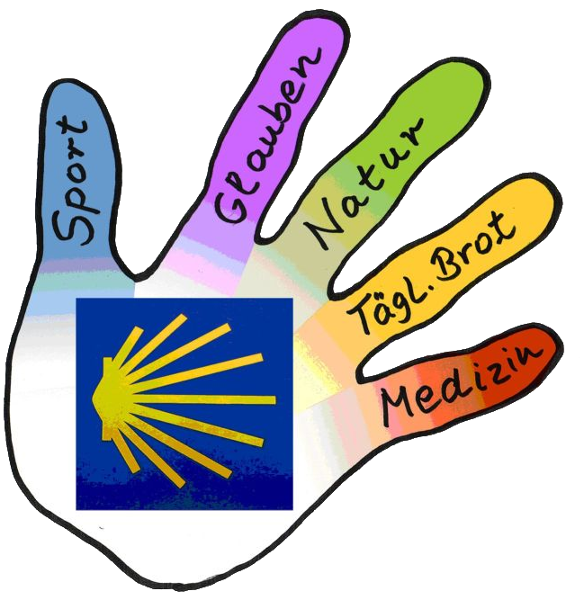

<!DOCTYPE html>
<html xmlns="http://www.w3.org/1999/xhtml" lang="de" xml:lang="de"><head>

<meta charset="utf-8">
<meta name="generator" content="quarto-0.9.649">

<meta name="viewport" content="width=device-width, initial-scale=1.0, user-scalable=yes">


<title>Jakobsweg Göppingen – bilder</title>
<style>
code{white-space: pre-wrap;}
span.smallcaps{font-variant: small-caps;}
span.underline{text-decoration: underline;}
div.column{display: inline-block; vertical-align: top; width: 50%;}
div.hanging-indent{margin-left: 1.5em; text-indent: -1.5em;}
ul.task-list{list-style: none;}
</style>


<script src="site_libs/quarto-nav/quarto-nav.js"></script>
<script src="site_libs/quarto-nav/headroom.min.js"></script>
<script src="site_libs/clipboard/clipboard.min.js"></script>
<script src="site_libs/quarto-search/autocomplete.umd.js"></script>
<script src="site_libs/quarto-search/fuse.min.js"></script>
<script src="site_libs/quarto-search/quarto-search.js"></script>
<meta name="quarto:offset" content="./">
<link href="./images/logo.png" rel="icon" type="image/png">
<script src="site_libs/quarto-html/quarto.js"></script>
<script src="site_libs/quarto-html/popper.min.js"></script>
<script src="site_libs/quarto-html/tippy.umd.min.js"></script>
<script src="site_libs/quarto-html/anchor.min.js"></script>
<link href="site_libs/quarto-html/tippy.css" rel="stylesheet">
<link href="site_libs/quarto-html/quarto-syntax-highlighting.css" rel="stylesheet" id="quarto-text-highlighting-styles">
<script src="site_libs/bootstrap/bootstrap.min.js"></script>
<link href="site_libs/bootstrap/bootstrap-icons.css" rel="stylesheet">
<link href="site_libs/bootstrap/bootstrap.min.css" rel="stylesheet">
<script id="quarto-search-options" type="application/json">{
  "location": "navbar",
  "copy-button": false,
  "collapse-after": 3,
  "panel-placement": "end",
  "type": "overlay",
  "limit": 20,
  "language": {
    "search-no-results-text": "Keine Treffer",
    "search-matching-documents-text": "Treffer",
    "search-copy-link-title": "Link in die Suche kopieren",
    "search-hide-matches-text": "Zusätzliche Treffer verbergen",
    "search-more-match-text": "weitere Treffer in diesem Dokument",
    "search-more-matches-text": "weitere Treffer in diesem Dokument",
    "search-clear-button-title": "Zurücksetzen",
    "search-detached-cancel-button-title": "Abbrechen",
    "search-submit-button-title": "Abschicken"
  }
}</script>


<link rel="stylesheet" href="styles.css">
</head>

<body class="nav-fixed">

<div id="quarto-search-results"></div>
  <header id="quarto-header" class="headroom fixed-top">
    <nav class="navbar navbar-expand-lg navbar-dark ">
      <div class="navbar-container container-fluid">
      <a class="navbar-brand" href="./index.html">
    
    <span class="navbar-title">Jakobsweg Göppingen</span>
  </a>
          <button class="navbar-toggler" type="button" data-bs-toggle="collapse" data-bs-target="#navbarCollapse" aria-controls="navbarCollapse" aria-expanded="false" aria-label="Toggle navigation" onclick="if (window.quartoToggleHeadroom) { window.quartoToggleHeadroom(); }">
  <span class="navbar-toggler-icon"></span>
</button>
          <div class="collapse navbar-collapse" id="navbarCollapse">
            <ul class="navbar-nav navbar-nav-scroll me-auto">
  <li class="nav-item">
    <a class="nav-link" href="./index.html">Startseite</a>
  </li>  
  <li class="nav-item">
    <a class="nav-link" href="./wegbeschreibung.html">Wegbeschreibung</a>
  </li>  
  <li class="nav-item">
    <a class="nav-link" href="./karte.html">Karte</a>
  </li>  
  <li class="nav-item">
    <a class="nav-link active" href="./bilder.html" aria-current="page">Bilder</a>
  </li>  
  <li class="nav-item">
    <a class="nav-link" href="./ueberuns.html">Über uns</a>
  </li>  
</ul>
              <div id="quarto-search" class="" title="Search"></div>
          </div> <!-- /navcollapse -->
      </div> <!-- /container-fluid -->
    </nav>
</header>
<!-- content -->
<div id="quarto-content" class="quarto-container page-columns page-rows-contents page-layout-full page-navbar">
<!-- sidebar -->
<!-- margin-sidebar -->
    
<!-- main -->
<main class="content column-page" id="quarto-document-content">


<section id="der-startpunkt-der-wanderung---die-jakobuskirche-in-bargau" class="level2">
<h2 class="anchored" data-anchor-id="der-startpunkt-der-wanderung---die-jakobuskirche-in-bargau">Der Startpunkt der Wanderung - die Jakobuskirche in Bargau</h2>
<div class="quarto-figure quarto-figure-center">
<figure class="figure">
<p></p>
<p></p><figcaption aria-hidden="true" class="figure-caption">Jakobskirche in Bargau - Quelle: Wikipedia</figcaption><p></p>
</figure>
</div>
</section>
<section id="kaltes-feld" class="level2">
<h2 class="anchored" data-anchor-id="kaltes-feld">Kaltes Feld</h2>
<div class="quarto-figure quarto-figure-center">
<figure class="figure">
<p></p>
<p></p><figcaption aria-hidden="true" class="figure-caption">Kaltesfeld bei Hohenstaufen - Quelle: Wikipedia</figcaption><p></p>
</figure>
</div>
</section>
<section id="der-rechberg" class="level2">
<h2 class="anchored" data-anchor-id="der-rechberg">Der Rechberg</h2>
<div class="quarto-figure quarto-figure-center">
<figure class="figure">
<p></p>
<p></p><figcaption aria-hidden="true" class="figure-caption">Blick zum Rechberg - Quelle: Wikipedia</figcaption><p></p>
</figure>
</div>
</section>
<section id="die-stiftskirche-in-faurndau" class="level2">
<h2 class="anchored" data-anchor-id="die-stiftskirche-in-faurndau">Die Stiftskirche in Faurndau</h2>
<div class="quarto-figure quarto-figure-center">
<figure class="figure">
<p></p>
<p></p><figcaption aria-hidden="true" class="figure-caption">Die Stiftskirche - Quelle: Wikipedia</figcaption><p></p>
</figure>
</div>
</section>
<section id="wanderung-entlang-der-fils" class="level2">
<h2 class="anchored" data-anchor-id="wanderung-entlang-der-fils">Wanderung entlang der Fils</h2>
<div class="quarto-figure quarto-figure-center">
<figure class="figure">
<p></p>
<p></p><figcaption aria-hidden="true" class="figure-caption">Wanderung entlang der Fils - Quelle: Wikipedia</figcaption><p></p>
</figure>
</div>
</section>
<section id="wandergruppe-zwischen-jebenhausen-und-schopflenberg" class="level2">
<h2 class="anchored" data-anchor-id="wandergruppe-zwischen-jebenhausen-und-schopflenberg">Wandergruppe zwischen Jebenhausen und Schopflenberg</h2>
<div class="quarto-figure quarto-figure-center">
<figure class="figure">
<p></p>
<p></p><figcaption aria-hidden="true" class="figure-caption">Wandergruppe auf dem Göppinger Jakobsweg - Quelle: privat</figcaption><p></p>
</figure>
</div>
</section>
<section id="die-jakobskapelle-in-krummwälden" class="level2">
<h2 class="anchored" data-anchor-id="die-jakobskapelle-in-krummwälden">Die Jakobskapelle in Krummwälden</h2>
<div class="quarto-figure quarto-figure-center">
<figure class="figure">
<p></p>
<p></p><figcaption aria-hidden="true" class="figure-caption">Die Jakobskapelle in Krummwälden - Quelle: privat</figcaption><p></p>
</figure>
</div>
</section>
<section id="blick-auf-die-kaiserberg" class="level2">
<h2 class="anchored" data-anchor-id="blick-auf-die-kaiserberg">Blick auf die Kaiserberg</h2>
<div class="quarto-figure quarto-figure-center">
<figure class="figure">
<p></p>
<p></p><figcaption aria-hidden="true" class="figure-caption">Umwelt und Natur - Quelle: privat</figcaption><p></p>
</figure>
</div>
</section>
<section id="bäckerei-herdtlinsweiler" class="level1">
<h1>Bäckerei Herdtlinsweiler</h1>
<div class="quarto-figure quarto-figure-center">
<figure class="figure">
<p></p>
<p></p><figcaption aria-hidden="true" class="figure-caption">Täglich Brot - Quelle: Privat</figcaption><p></p>
</figure>
</div>
<section id="kräuterspirale-apotheke-faurndau" class="level2">
<h2 class="anchored" data-anchor-id="kräuterspirale-apotheke-faurndau">Kräuterspirale Apotheke Faurndau</h2>
<div class="quarto-figure quarto-figure-center">
<figure class="figure">
<p></p>
<p></p><figcaption aria-hidden="true" class="figure-caption">Kräuterspirale Medizin - Quelle: privat</figcaption><p></p>
</figure>
</div>


</section>
</section>

</main> <!-- /main -->
<script id="quarto-html-after-body" type="application/javascript">
window.document.addEventListener("DOMContentLoaded", function (event) {
  const icon = "";
  const anchorJS = new window.AnchorJS();
  anchorJS.options = {
    placement: 'right',
    icon: icon
  };
  anchorJS.add('.anchored');
  const clipboard = new window.ClipboardJS('.code-copy-button', {
    target: function(trigger) {
      return trigger.previousElementSibling;
    }
  });
  clipboard.on('success', function(e) {
    // button target
    const button = e.trigger;
    // don't keep focus
    button.blur();
    // flash "checked"
    button.classList.add('code-copy-button-checked');
    var currentTitle = button.getAttribute("title");
    button.setAttribute("title", "Kopiert");
    setTimeout(function() {
      button.setAttribute("title", currentTitle);
      button.classList.remove('code-copy-button-checked');
    }, 1000);
    // clear code selection
    e.clearSelection();
  });
  function tippyHover(el, contentFn) {
    const config = {
      allowHTML: true,
      content: contentFn,
      maxWidth: 500,
      delay: 100,
      arrow: false,
      appendTo: function(el) {
          return el.parentElement;
      },
      interactive: true,
      interactiveBorder: 10,
      theme: 'quarto',
      placement: 'bottom-start'
    };
    window.tippy(el, config); 
  }
  const noterefs = window.document.querySelectorAll('a[role="doc-noteref"]');
  for (var i=0; i<noterefs.length; i++) {
    const ref = noterefs[i];
    tippyHover(ref, function() {
      let href = ref.getAttribute('href');
      try { href = new URL(href).hash; } catch {}
      const id = href.replace(/^#\/?/, "");
      const note = window.document.getElementById(id);
      return note.innerHTML;
    });
  }
  var bibliorefs = window.document.querySelectorAll('a[role="doc-biblioref"]');
  for (var i=0; i<bibliorefs.length; i++) {
    const ref = bibliorefs[i];
    const cites = ref.parentNode.getAttribute('data-cites').split(' ');
    tippyHover(ref, function() {
      var popup = window.document.createElement('div');
      cites.forEach(function(cite) {
        var citeDiv = window.document.createElement('div');
        citeDiv.classList.add('hanging-indent');
        citeDiv.classList.add('csl-entry');
        var biblioDiv = window.document.getElementById('ref-' + cite);
        if (biblioDiv) {
          citeDiv.innerHTML = biblioDiv.innerHTML;
        }
        popup.appendChild(citeDiv);
      });
      return popup.innerHTML;
    });
  }
});
</script>
</div> <!-- /content -->
<footer class="footer">
  <div class="nav-footer">
    <div class="nav-footer-left">Jakobsweg Initative</div>   
    <div class="nav-footer-right">
      <ul class="footer-items list-unstyled">
    <li class="nav-item compact">
    <a class="nav-link" href="https://github.com/quarto-dev/quarto-cli">
      <i class="bi bi-github" role="img">
</i> 
    </a>
  </li>  
</ul>
    </div>
  </div>
</footer>


</body></html>